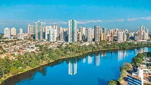

Curitiba
Maior cidade do Sul do país, com quase 2 milhões de habitantes, Curitiba é referência em
qualidade de vida e foi eleita a cidade mais inteligente do Brasil. Contudo, apesar dos
aspectos futuristas, a capital paranaense guarda muitas características de cidades do interior.
A cidade também se destaca pelo eficiente transporte público e pela mobilidade urbana, além
de uma forte produção artística. Tudo isso faz de Curitiba um destino repleto de facilidades
e atrações, com excelentes serviços para os turistas.
Saiba Mais
Londrina

Localizada no Norte do Estado, Londrina foi fundada em 1934. Recebeu imigrantes de diversas
nacionalidades, principalmente italianos, portugueses, japoneses, alemães e árabes.
É a maior cidade do Interior do Paraná, com 500 mil habitantes. Este importante centro
econômico se destaca pela produção agrícola. A terra roxa, extremamente fértil, foi determinante
para a fundação e o crescimento da região. Londrina é uma cidade moderna, dinâmica e desenvolvida,
com um olhar para o futuro, sem esquecer de suas raízes e do meio ambiente. Por isso, algumas
dos melhores passeios e cartões-postais são cercados pelo verde da Mata Atlântica.
Saiba Mais